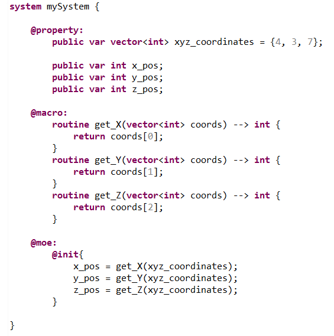
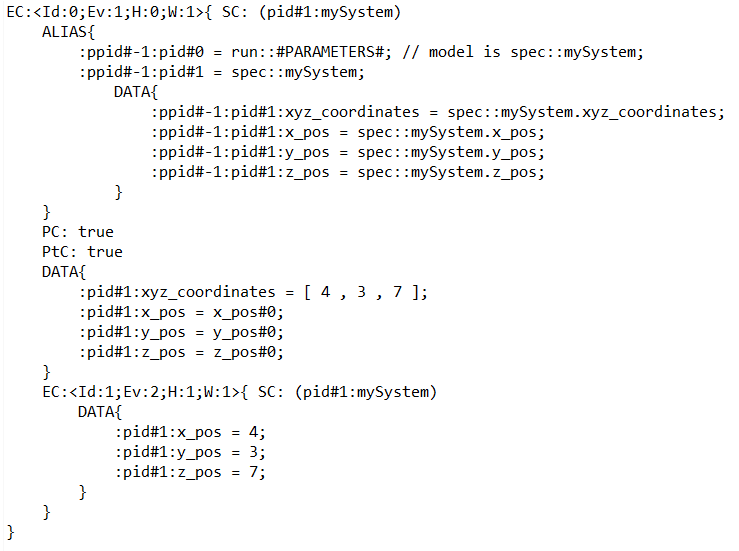
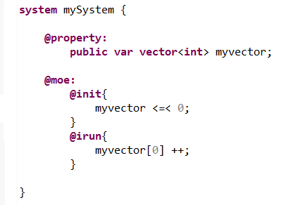
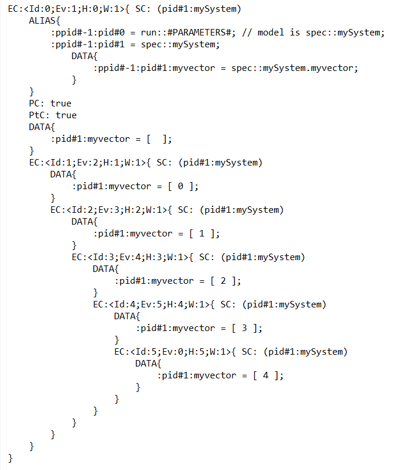

In the following example, we create a vector variable that stores 3 integers representing coordinates. The definition of the initial value follows the classic pattern for all collection types.
To access an element contained within a vector you just need to write "vector_name[element_index]". This syntax is used in the routines that are defined to access to each one of the 3 coordinates.
To code is the following :
At the initialization, the 3 integer position variables will be given the values corresponding to the correct elements within the vector.
We can verify that this is the case by (for instance) generating and looking into the "phase1.fscn" file :
In the following example, we create an empty vector variable that can carry integers. The syntax to append elements to the vector and to modify them is described.
To code is the following :
At the initialization, we push the "0" value into the vector. Then at each step of calculus we increment it (limited the exploration at 5 total steps).
We can verify that this is the case by (for instance) generating and looking into the "phase1.fscn" file :
NOT IMPLEMENTED FOR VECTORS